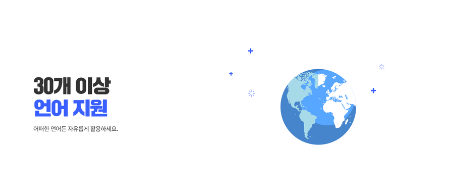

AX2가 이제 30개 이상의 언어를 지원합니다! 이번 업데이트를 통해 전 세계 더 많은 사용자들이 AX2를 활용할 수 있게 되었습니다.
🌍 지원 언어 목록
다음 언어들을 지원합니다:
아시아
- 한국어
- 일본어
- 중국어 (간체/번체)
- 태국어
- 베트남어
- 인도네시아어
- 힌디어
유럽
- 영어
- 스페인어
- 프랑스어
- 독일어
- 이탈리아어
- 포르투갈어
- 러시아어
- 네덜란드어
기타
- 아랍어
- 터키어
- 폴란드어
- 스웨덴어
- 노르웨이어
- 덴마크어
- 핀란드어
- 그리고 더 많은 언어들...
새로운 기능
다중 언어 동시 번역
하나의 영상을 여러 언어로 동시에 번역할 수 있습니다. 시간을 절약하고 효율적으로 작업하세요.
자동 언어 감지
영상의 언어를 자동으로 감지하여 올바른 번역 모델을 적용합니다.
향상된 번역 품질
각 언어에 최적화된 번역 모델을 사용하여 더 자연스럽고 정확한 번역을 제공합니다.
글로벌 비즈니스 활용
이제 전 세계 어디서나 AX2를 활용할 수 있습니다. 글로벌 기업, 교육 기관, 콘텐츠 크리에이터 등 다양한 분야에서 활용 가능합니다.
활용 사례
- 1 글로벌 기업: 다국어 교육 영상 제작 및 내부 커뮤니케이션
- 2 교육 기관: 온라인 강의의 다국어 자막 제공
- 3 콘텐츠 크리에이터: 글로벌 시청자를 위한 다국어 자막
AX
AX2 팀
번역 기술을 선도하는 팀